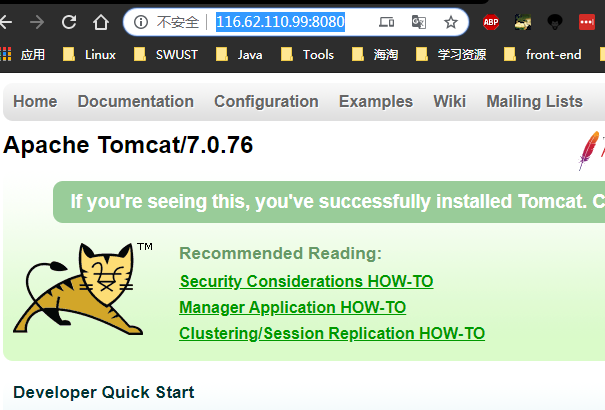
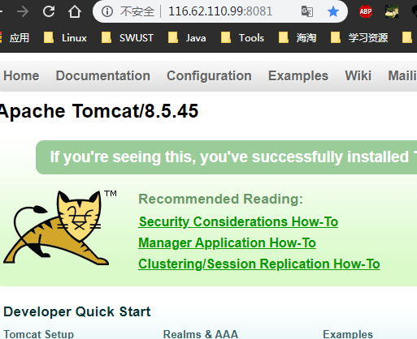

Dockerfile
作用
可以将我们的应用程序打包进镜像,启动镜像的容器,一次编译处处运行.
Dockerfile是什么?
windows的脚本叫bat, linux的脚本叫shell,docker的脚本叫Dockerfile
如果我们可以把每一层修改、安装、构建、操作的命令都写入一个脚本，用这个脚本来构建、定制镜像，那么之前提及的无法重复的问题、镜像构建透明性的问题、体积的问题就都会解决。
Dockerfile是一个文本文件,其中包含了一条一条的指令(Instruction),因此每一条指令的内容，就是描述该层应当如何构建.
这次我将在我的阿里云服务器使用 Dockerfile 来定制tomcat镜像为例.
起步
1
2
3
4
5
6
7
8
9
10
11
12
13
14
15
16
17
18
19
20
21
22
23
| ~ sudo docker run -it tomcat bash
[sudo] password for ziming:
root@071424b6b8ef:/usr/local/tomcat#
root@071424b6b8ef:/usr/local/tomcat# ls -al
total 160
drwxr-sr-x 1 root staff 4096 Aug 22 00:26 .
drwxrwsr-x 1 root staff 4096 Aug 15 05:20 ..
-rw-r--r-- 1 root root 19534 Aug 14 22:27 BUILDING.txt
-rw-r--r-- 1 root root 5407 Aug 14 22:27 CONTRIBUTING.md
-rw-r--r-- 1 root root 57011 Aug 14 22:27 LICENSE
-rw-r--r-- 1 root root 1726 Aug 14 22:27 NOTICE
-rw-r--r-- 1 root root 3255 Aug 14 22:27 README.md
-rw-r--r-- 1 root root 7139 Aug 14 22:27 RELEASE-NOTES
-rw-r--r-- 1 root root 16262 Aug 14 22:27 RUNNING.txt
drwxr-xr-x 2 root root 4096 Aug 22 00:26 bin
drwxr-sr-x 2 root root 4096 Aug 14 22:27 conf
drwxr-sr-x 2 root staff 4096 Aug 22 00:26 include
drwxr-xr-x 2 root root 4096 Aug 22 00:26 lib
drwxrwxrwx 2 root root 4096 Aug 14 22:24 logs
drwxr-sr-x 3 root staff 4096 Aug 22 00:26 native-jni-lib
drwxr-xr-x 2 root root 4096 Aug 22 00:26 temp
drwxr-xr-x 7 root root 4096 Aug 14 22:24 webapps
drwxrwxrwx 2 root root 4096 Aug 14 22:24 work
|
- 进入webapps/ROOT
ls -la查看ROOT下文件
1
2
3
4
5
6
7
8
9
10
11
12
13
14
15
16
17
18
| root@071424b6b8ef:/usr/local/tomcat/webapps/ROOT# ls -la
total 192
drwxr-xr-x 3 root root 4096 Aug 22 00:26 .
drwxr-xr-x 7 root root 4096 Aug 14 22:24 ..
-rw-r--r-- 1 root root 7139 Aug 14 22:27 RELEASE-NOTES.txt
drwxr-xr-x 2 root root 4096 Aug 22 00:26 WEB-INF
-rw-r--r-- 1 root root 27235 Aug 14 22:27 asf-logo-wide.svg
-rw-r--r-- 1 root root 713 Aug 14 22:24 bg-button.png
-rw-r--r-- 1 root root 1918 Aug 14 22:24 bg-middle.png
-rw-r--r-- 1 root root 1401 Aug 14 22:24 bg-nav.png
-rw-r--r-- 1 root root 3103 Aug 14 22:24 bg-upper.png
-rw-r--r-- 1 root root 21630 Aug 14 22:24 favicon.ico
-rw-r--r-- 1 root root 12208 Aug 14 22:27 index.jsp
-rw-r--r-- 1 root root 2376 Aug 14 22:24 tomcat-power.gif
-rw-r--r-- 1 root root 5581 Aug 14 22:27 tomcat.css
-rw-r--r-- 1 root root 2066 Aug 14 22:24 tomcat.gif
-rw-r--r-- 1 root root 5103 Aug 14 22:24 tomcat.png
-rw-r--r-- 1 root root 67795 Aug 14 22:27 tomcat.svg
|
-
查看index.jsp文件
`cat index.jsp’
root@071424b6b8ef:/usr/local/tomcat/webapps/ROOT# cat index.jsp
-
追加hello docker tomcat 到 index.jsp中
root@071424b6b8ef:/usr/local/tomcat/webapps/ROOT# echo “hello docker tomcat” >> index.jsp
-
退出容器
exit
-
运行docker的tomcat
因为我的8080端口本身就被宿主机的tomcat占用,所有这里解析到8081
docker run -p 8081:8080 tomcat
- run代表启动一个新容器,相当于new,触发隔离机制
-P(大写P) 参数来指定端口映射标记时，Docker 会随机映射一个端口到内部容器开放的网络端口 (端口范围在 Linux 系统使用的端口之外，一般都过万)-p(小写p)可以指定要映射的端口，并且在一个指定的端口上只可以绑定一个容器。支持的格式有:IP:HostPort:ContainerPort | IP::ContainerPort | HostPort:ContainerPort- :之前的表示宿主机的端口
- :之后的表示容器的端口
- :表示映射
-
在web端查看有没有hello docker tomcat
发现没有
notice docker的沙箱机制隔离机制.这里比较细,需要的搜索下资料.
-
另外登录一个用户查看正在运行的docker容器
查看正在运行的容器docker ps
1
| beae6fea7aa7 tomcat "catalina.sh run" 24 seconds ago Up 24 seconds 0.0.0.0:8081->8080/tcp thirsty_jang
|
8080端口,宿主机本身的tomcat 版本为7.0.76

8081端口,Docker的tomcat容器 版本为8.5.45

-
交互的方式启动容器
- docker run -p 8081:8080 tomcat
-
交互的方式进入容器
- docker exec -it 容器id bash
1
2
3
4
5
6
7
8
9
| ➜ ~ sudo docker exec -it 7db bash
root@7db5c8940e5a:/usr/local/tomcat#
root@7db5c8940e5a:/usr/local/tomcat# cd webapps/
root@7db5c8940e5a:/usr/local/tomcat/webapps# cd ROOT
root@7db5c8940e5a:/usr/local/tomcat/webapps/ROOT# echo "hello docker tomcat" >> index.jsp
root@7db5c8940e5a:/usr/local/tomcat/webapps/ROOT#
root@7db5c8940e5a:/usr/local/tomcat/webapps/ROOT# cat index.jsp
</html>
hello docker tomcat
|
此时我们看到,hello docker tomcat 已经在文件中了
打开浏览器查看结果

1
2
3
4
5
6
7
| ➜ ~ sudo docker ps -a
CONTAINER ID IMAGE COMMAND CREATED STATUS PORTS NAMES
a83388199fb6 tomcat "catalina.sh run" 12 minutes ago Created flamboyant_goldstine
071424b6b8ef tomcat "bash" 33 minutes ago Exited (0) 17 minutes ago compassionate_jones
f6007831657c tomcat "catalina.sh run" 20 hours ago Created wizardly_newton
8191ed8e159c tomcat "catalina.sh run" 20 hours ago Exited (130) 20 hours ago busy_bhabha
7c01da3b0629 nginx:1.16.1 "nginx -g 'daemon of…" 3 weeks ago Exited (0) 24 hours ago MyNginx
|
- 删除正在运行的tomcat容器
sudo docker rm f6007831657c 后面那串字符是编号
1
2
3
| ➜ ~ sudo docker ps -a
CONTAINER ID IMAGE COMMAND CREATED STATUS NAMES
7c01da3b0629 nginx:1.16.1 "nginx -g 'daemon of…" 3 weeks ago Exited MyNginx
|